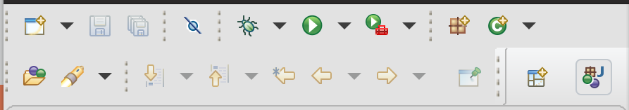
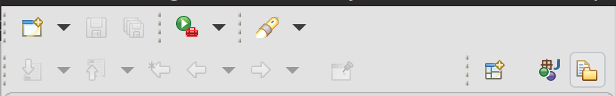

Views, Dialogs and Toolbar
The formerly called Quick Access action has been retitled to Find Actions to better emphasize its goal.
Related UI changed a bit to improve its usage and acessibility:
- the widget item is now a regular toolbar item (button-like)
- an icon was added
- right-clicking on the tool item works and show typical actions, including Hide
- the proposals are now a regular dialog, centered on the workbench
Loading the proposals has been improved to reduce amount and durations of UI freezes when loading proposals.
Text Editors

Themes and Styling
Old: 
New: 
Old:

New: